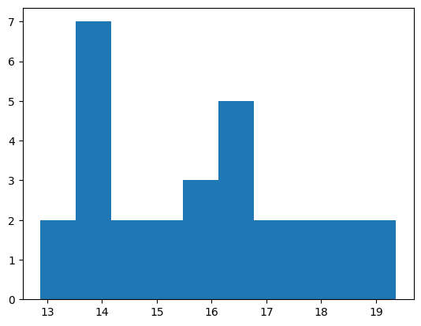

from itertools import product, combinations
from collections import Counter
from IPython.display import display, Latex
import numpy as np
from scipy import stats
import matplotlib.pyplot as plt
vars = [2, 4, 6, 8]
mu = sum(vars)/4
dev = np.std(vars)
display(Latex(f'$\mu={mu}$'))
display(Latex(f'$\sigma={dev}$'))
\[\mu=5.0\]
\[\sigma=2.23606797749979\]
np.sqrt((sum((np.array(vars)-mu)**2)/4))
2.23606797749979
np.sqrt((sum((np.array(vars)-mu)**2)/3))
2.581988897471611
help(combinations)
Help on class combinations in module itertools:
class combinations(builtins.object)
| combinations(iterable, r)
|
| Return successive r-length combinations of elements in the iterable.
|
| combinations(range(4), 3) --> (0,1,2), (0,1,3), (0,2,3), (1,2,3)
|
| Methods defined here:
|
| __getattribute__(self, name, /)
| Return getattr(self, name).
|
| __iter__(self, /)
| Implement iter(self).
|
| __next__(self, /)
| Implement next(self).
|
| __reduce__(...)
| Return state information for pickling.
|
| __setstate__(...)
| Set state information for unpickling.
|
| __sizeof__(...)
| Returns size in memory, in bytes.
|
| ----------------------------------------------------------------------
| Static methods defined here:
|
| __new__(*args, **kwargs) from builtins.type
| Create and return a new object. See help(type) for accurate signature.
len(list(combinations(vars, 2)))
6
len(list(product(vars, repeat=2)))
16
list(product(vars, repeat=2))
[(2, 2),
(2, 4),
(2, 6),
(2, 8),
(4, 2),
(4, 4),
(4, 6),
(4, 8),
(6, 2),
(6, 4),
(6, 6),
(6, 8),
(8, 2),
(8, 4),
(8, 6),
(8, 8)]
N = 2
amostras = list(product(vars, repeat=N))
medias = []
for a in amostras:
medias.append(sum(a)/N)
medias
[2.0,
3.0,
4.0,
5.0,
3.0,
4.0,
5.0,
6.0,
4.0,
5.0,
6.0,
7.0,
5.0,
6.0,
7.0,
8.0]
mu_amostral = sum(medias)/16
dev_amostral = np.std(medias)
display(Latex(f'$Media(X)={mu_amostral}$'))
display(Latex(f'$Var(X)={dev_amostral}$'))
\[Media(X)=5.0\]
\[Var(X)=1.5811388300841898\]
# SEM para amostra N=2
dev/np.sqrt(2)
1.5811388300841895
Counter(medias)
Counter({2.0: 1, 3.0: 2, 4.0: 3, 5.0: 4, 6.0: 3, 7.0: 2, 8.0: 1})
plt.bar(Counter(medias).keys(), Counter(medias).values())
<BarContainer object of 7 artists>
from numpy.random import choice
import random
medias_amostrais = list(Counter(medias).keys())
freq_amostrais = np.array(list(Counter(medias).values()))
amostra1 = random.choices(population=medias_amostrais,
weights=freq_amostrais,
k=1000)
amostra = choice(medias_amostrais, 1000,
p=freq_amostrais/freq_amostrais.sum())
plt.hist(amostra1)
(array([ 61., 125., 0., 194., 0., 270., 161., 0., 120., 69.]),
array([2. , 2.6, 3.2, 3.8, 4.4, 5. , 5.6, 6.2, 6.8, 7.4, 8. ]),
<BarContainer object of 10 artists>)
plt.hist(amostra)
(array([ 53., 121., 0., 185., 0., 295., 167., 0., 116., 63.]),
array([2. , 2.6, 3.2, 3.8, 4.4, 5. , 5.6, 6.2, 6.8, 7.4, 8. ]),
<BarContainer object of 10 artists>)
freq_amostrais
array([1, 2, 3, 4, 3, 2, 1])
5/np.sqrt(5)
2.23606797749979
help(stats.norm)
Help on norm_gen in module scipy.stats._continuous_distns:
<scipy.stats._continuous_distns.norm_gen object>
A normal continuous random variable.
The location (``loc``) keyword specifies the mean.
The scale (``scale``) keyword specifies the standard deviation.
As an instance of the `rv_continuous` class, `norm` object inherits from it
a collection of generic methods (see below for the full list),
and completes them with details specific for this particular distribution.
Methods
-------
rvs(loc=0, scale=1, size=1, random_state=None)
Random variates.
pdf(x, loc=0, scale=1)
Probability density function.
logpdf(x, loc=0, scale=1)
Log of the probability density function.
cdf(x, loc=0, scale=1)
Cumulative distribution function.
logcdf(x, loc=0, scale=1)
Log of the cumulative distribution function.
sf(x, loc=0, scale=1)
Survival function (also defined as ``1 - cdf``, but `sf` is sometimes more accurate).
logsf(x, loc=0, scale=1)
Log of the survival function.
ppf(q, loc=0, scale=1)
Percent point function (inverse of ``cdf`` --- percentiles).
isf(q, loc=0, scale=1)
Inverse survival function (inverse of ``sf``).
moment(order, loc=0, scale=1)
Non-central moment of the specified order.
stats(loc=0, scale=1, moments='mv')
Mean('m'), variance('v'), skew('s'), and/or kurtosis('k').
entropy(loc=0, scale=1)
(Differential) entropy of the RV.
fit(data)
Parameter estimates for generic data.
See `scipy.stats.rv_continuous.fit <https://docs.scipy.org/doc/scipy/reference/generated/scipy.stats.rv_continuous.fit.html#scipy.stats.rv_continuous.fit>`__ for detailed documentation of the
keyword arguments.
expect(func, args=(), loc=0, scale=1, lb=None, ub=None, conditional=False, **kwds)
Expected value of a function (of one argument) with respect to the distribution.
median(loc=0, scale=1)
Median of the distribution.
mean(loc=0, scale=1)
Mean of the distribution.
var(loc=0, scale=1)
Variance of the distribution.
std(loc=0, scale=1)
Standard deviation of the distribution.
interval(confidence, loc=0, scale=1)
Confidence interval with equal areas around the median.
Notes
-----
The probability density function for `norm` is:
.. math::
f(x) = \frac{\exp(-x^2/2)}{\sqrt{2\pi}}
for a real number :math:`x`.
The probability density above is defined in the "standardized" form. To shift
and/or scale the distribution use the ``loc`` and ``scale`` parameters.
Specifically, ``norm.pdf(x, loc, scale)`` is identically
equivalent to ``norm.pdf(y) / scale`` with
``y = (x - loc) / scale``. Note that shifting the location of a distribution
does not make it a "noncentral" distribution; noncentral generalizations of
some distributions are available in separate classes.
Examples
--------
>>> import numpy as np
>>> from scipy.stats import norm
>>> import matplotlib.pyplot as plt
>>> fig, ax = plt.subplots(1, 1)
Calculate the first four moments:
>>> mean, var, skew, kurt = norm.stats(moments='mvsk')
Display the probability density function (``pdf``):
>>> x = np.linspace(norm.ppf(0.01),
... norm.ppf(0.99), 100)
>>> ax.plot(x, norm.pdf(x),
... 'r-', lw=5, alpha=0.6, label='norm pdf')
Alternatively, the distribution object can be called (as a function)
to fix the shape, location and scale parameters. This returns a "frozen"
RV object holding the given parameters fixed.
Freeze the distribution and display the frozen ``pdf``:
>>> rv = norm()
>>> ax.plot(x, rv.pdf(x), 'k-', lw=2, label='frozen pdf')
Check accuracy of ``cdf`` and ``ppf``:
>>> vals = norm.ppf([0.001, 0.5, 0.999])
>>> np.allclose([0.001, 0.5, 0.999], norm.cdf(vals))
True
Generate random numbers:
>>> r = norm.rvs(size=1000)
And compare the histogram:
>>> ax.hist(r, density=True, bins='auto', histtype='stepfilled', alpha=0.2)
>>> ax.set_xlim([x[0], x[-1]])
>>> ax.legend(loc='best', frameon=False)
>>> plt.show()
rv = stats.norm(16, 5)
r = rv.rvs(size=1000)
fig, ax = plt.subplots(1, 1)
ax.hist(r, density=True, bins='auto', histtype='stepfilled', alpha=0.2)
ax.legend(loc='best', frameon=False)
plt.show()
No artists with labels found to put in legend. Note that artists whose label start with an underscore are ignored when legend() is called with no argument.
random.choices(r, k=5)
[20.755895792614076,
7.585962260672254,
8.53060928717545,
11.958047534251623,
15.341527113964124]
#https://onlinestatbook.com/stat_sim/sampling_dist/index.html
import time
from IPython.display import clear_output
k = 5
s = []
for i in range(100):
clear_output()
s.append(np.mean(random.choices(r, k=5)))
plt.hist(s)
plt.show()
plt.close()
time.sleep(1)

---------------------------------------------------------------------------
KeyboardInterrupt Traceback (most recent call last)
Cell In[22], line 13
11 plt.show()
12 plt.close()
---> 13 time.sleep(1)
KeyboardInterrupt: